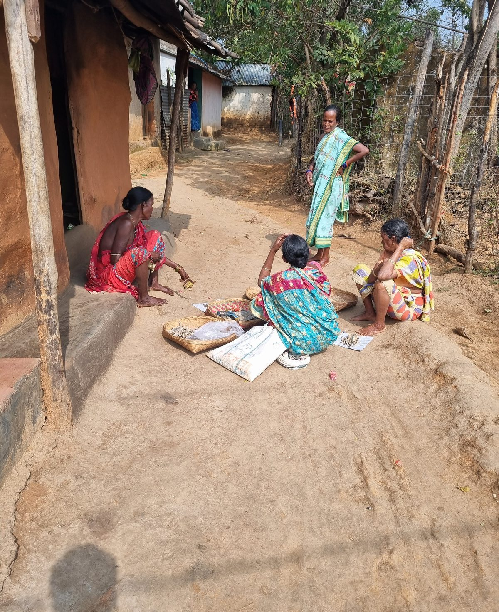

Journal ·
The stories the soil tells
There are hundreds of stories here. They don't happen in grand, orchestrated events. They happen quietly at dawn when the mist still hangs over the hills, or when the women gather near the earth.

When you sit with someone and just listen, the true stories start flowing. It's about the connection to the paddy fields, the smell of the wet red mud, and the quiet rhythm of the village that absorbs you completely.
You don't collect stories here. You let them sink into you over cups of tea and long walks.

This space is where those hundreds of stories will slowly find their home. A raw, unpolished archive of life exactly as it is.
Written in Sarangada, Kandhamal.